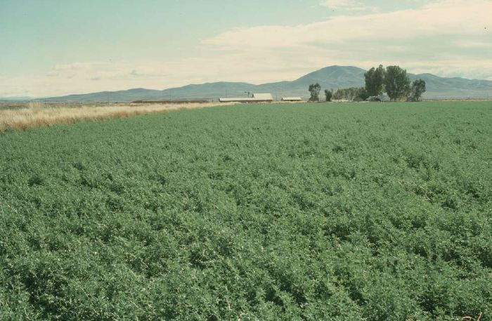

Layton City
History
Layton was settled around 1850 by pioneers from the Church of Jesus Christ of Latter-day Saints. The first settlers were Edward Phillips, John Hyrum Green, and William Kay. The settlement was know for a time as Freedom, until several years later when the name Kaysville became more widely used.
As time passed, more settlers lived near the Kays Ward fort near waht is currently Fort Lane Street. Several businesses, such as Burton, Herrick and White Company, Barton and Company, and the William A. Hyde store, helped commercially strengthen the area. This eventually led to the separation of Kays Creek from Kaysville. Its name was later changed to Layton, in honor of Christopher Layton - an early bishop and alfalfa crop farmer in the area. In 1907 the town was offical, and Layton continues to thrive today.
Come learn more at the Heritage Museum of Layton!
403 N Wasatch Dr
Layton, UT 84041
Admission is FREE. More information here.
Current Demographics
- Population: 79,680
- Median Age: 30.7
- Most Common Language: 87.6% English
- Poverty Rate: 7.31%
- Marriage Rate: 58.7%
- Number of Veterans: 4,643
- Population Annual Growth Rate: 1.06%
Fun things to do in Layton
- Visit SeaQuest
- Hike Adams Canyon Trail
- Shop at the Layton Hills Mall
- Cool off at Surf-n-Swim
- Let the kids burn off energy at the Sky Trampoline Arena
- View wildlife at the Great Salt Lake Shorelands Preserve
- Watch a performance at the Ed Kenley Amphitheater
Upcoming Layton Events